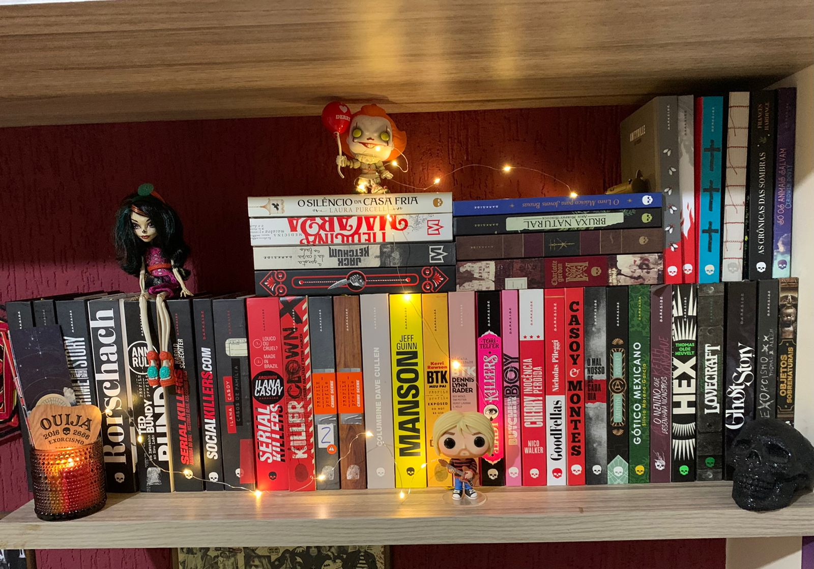
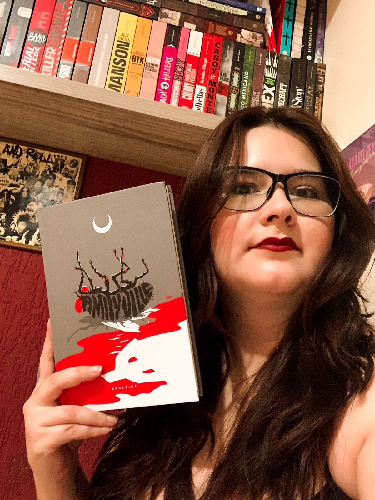

Sobre o Mistória
Mistória Literária = Mistério + História + Literatura! Tudo que a gente ama beeeem misturado!
Espero que vocês gostem pois estou fazendo com bastante carinho!
A ideia do Mistória surgiu em 2021 impulsionada pela paixão que tenho por livros, terror, crimes e mistérios.
Aqui você vai encontrar resenhas de livros, notícias literárias,
dicas de filmes e séries, crimes reais sem sensacionalismo, mistério e um pouquinho de história.
Quem Escreve

Olá, me chamo Natália Müller, tenho 29 anos, mãe de uma criança linda chamada Gabriel, tenho uma gata que atende por Miucha,sou fã de Nirvana, The Beatles e Lana Del Rey, pisciana e apaixonada por livros. Adoro terror e ler sobre true crime, sou de Goiânia - Goiás mas, não curto pequi nem sertanejo.